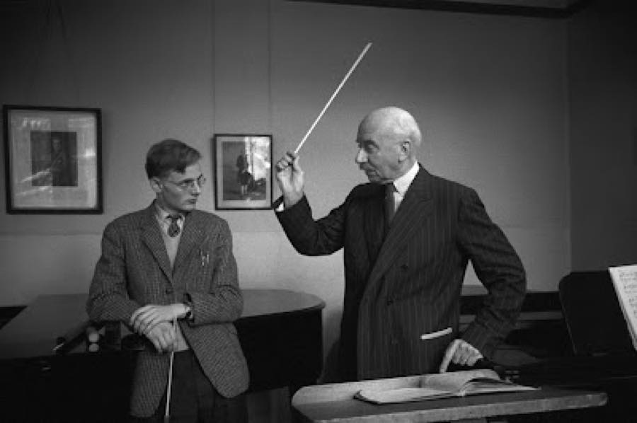

cómo ganar una beca
Querido postulante, rompete el culo para que te elijan. La beca es un all inclusive académico, será uno de los mejores años de tu vida. Está a tu alcance.
›Seguir leyendo
cómo ganar una beca
Querido postulante, rompete el culo para que te elijan. La beca es un all inclusive académico, será uno de los mejores años de tu vida. Está a tu alcance.
Create un verso. Verso en el buen sentido. Una narración. Concisa. Coherente.
Deciles en la entrevista que te interesa la comunicación con mayúsculas. Contales que estudiaste ciencia política, que laburás en opinión pública (laburaste menos de un año, no importa). Deciles también que trabajás en Poder Ciudadano, una ONG, eso suma. Esto que te digo, escribilo. Escribite también las principales ideas de lo que vas a contar en la entrevista. La coherencia que vas a crear sobre tu futuro. Escribí sobre lo que vas a hacer cuando termines los estudios. Ellos ya saben que puede pasar que no hagas nada de lo que les decís que vas a hacer. Importa tu poder para imaginar un porvenir. Eso es lo que evalúan.
Llamá a la profesora de inglés de la secundaria. Pedile a ella, a tu ex profesora, que te prepare. Se llama Marisa Hoffman. Contale a ella lo que querés decir. El hecho de explicarle te va a aclarar a vos. Meté conceptitos que convenzan. Agregá palabras clave para que ellos sepan que podés, que articulás bien un mensaje. Meté civil society, accontability, global public sphere, cosas así. Practicá con ella decirlo un par de veces en inglés. Te va a dar seguridad.
Bien, ahora conseguí dos cartas de recomendación. Lo óptimo es que una sea de la universidad y otra sea del mundo laboral, aunque apenas sí lo hayas pisado. Pedile una al rector. Tu universidad es chica, tenés acceso. A esa alta casa de estudios le conviene que te vayas afuera. Después lo publicitan y reclutan más estudiantes. Va a estar encantado. Te va a dar la carta para que la escribas vos y él le va poner solamente el gancho. Cuando escribas sobre vos adulate, no tengas vergüenza, pensá que es para que te salga la beca. Realzá tu capacidad analítica y el trabajo duro.
La otra carta pedísela a Mariano Vega Cisneros. Laburás con él en la consultora, le contás que te vas. Es importante que me compartas tu decisión de irte afuera, te va a decir Vega. Lo bueno de irse no es tanto lo que estudies. Es el hecho, es la experiencia, te sigue diciendo Vega, que estudió sociología en Oslo. Gran carta te hace Vega. Un toque lo admirás. Te gusta cómo habla, te gusta su simpleza. Es el Bioy de las ciencias sociales, sin tanta pinta.
Ya tenés las dos cartas. Andá tranquilo a la entrevista, es en la Fundación Antorchas, en San Telmo. Te vas a encontrar con Mota ahí. Ese pibe que te parece tan formal, con corbata, que medio se cree mil, que está esperando a que lo llamen para la entrevista, está en la sala de espera igual que vos. Sí, ese. Va a ser un amigazo tuyo allá. Mota se va a quedar unos cuantos años más que vos, viviendo en Londres, y va a venir seguido a visitarte, a Holanda, y ahora a Buenos Aires, y van a hablar siempre de la anécdota de la rusa. La mina que no se sacó el casco para que su novio no los viera, no los viera a Mota y a ella andar en moto y mandarse juntos, la rusa con casco puesto tipo hormiga atómica, para la habitación de la residencia.
Ahora no te queda otra que esperar. Ya mandaste las cartas, el formulario, te llamaron para la entrevista, creés que te fue bien, te preparaste con todo, pusiste garra, hiciste lo que estuvo a tu alcance para que la beca te suceda. Paciencia. Mientras tanto, podés seguir viviendo. Andate de vacaciones a Cuba, con Ale. Cuando descubran en Trinidad que no les alcanza la plata para los días que todavía les quedan por delante, inventen las siglas SJ. Significan: sstamo´ jugados. Y sí, estamos jugados, estamos jugados. Cuando inventen esas siglas, ese leitmotiv, sentados sobre las camas del cuarto de la cubana que los hospeda, decile a Ale que se pegue un billete de un dólar en la frente como si fuera el ancho de espada. Sacale una foto.
Volvé a Buenos Aires, no seas boludo, tres meses en Cuba es suficiente. Seguí laburando en Poder Ciudadano. ¿Por qué laburás ahí? Hay algo con la gente que está bueno adentro de ese lugar. Está bueno trabajar con otros para algo en común. Estás con Vanessa, la Alemana, con Carlos Stenberg, tu jefe. Conocés a Santi O´Donnell y otra gente copada.
Es 3 de septiembre. Estás dormido y pensás que estás soñando, son como las 7 de la matina. Tu viejo entró a tu casa con la llave que le diste para emergencias. Sube por la escalera caracol al entrepiso. Escuchás los pasos sobre los escalones de metal. Tu viejo te toca el hombro, mirás. No entendés bien. Te muestra el suplemento cultural del diario. Publicaron los resultados de la beca. Tac, te la ganaste. Sí, te ganaste la beca del British Council. Estallido de full felicity. Andás por la vida como disfrutando de un fuego artificial suspendido en el cielo.
El avión sale en un año. Cortá con Lucrecia, tu novia. La amás y todo eso, pero que te perdone, Londres es más fuerte. Decile a Lu que te vas y no sabés cuándo volvés. Es triste, pero igual andá con la verdad. No estás para que ella te visite o se instale allá con vos, olvidate de eso, deciselo y que quede claro porque es lo que sentís. No te vas a arrepentir.
En esos días te publican tu primera nota en un diario, en papel, con tu firma. Estás en tratativas con Germán Sopeña para entrar a La Nación. Estás tan entusiasmado con la posibilidad que hasta pensás que si podés entrar al diario no te vas a Londres. Un día te llama tu abuela y te dice que prendas la tele, que pongas Crónica. La avioneta en la que viajaba Sopeña se cayó y el tipo se murió, y claro, se suspende todo el proceso para entrar al diario.
Cuatro meses antes de que anuncien lo de la beca habías empezado a trabajar en Radio Nacional, en el programa de Rudy Elis, un tipo muy pedante. Rudy tiene un hijo que se llama igual que vos y que también se postuló a la beca pero no ganó. Cuando Rudy se entera por el diario de que te la ganaste vos se pone como loco. Vos te la ganaste porque vas a una universidad privada, te dice. Envidia, Rudy, tenés envidia.
Lo único que te llevás del laburo en la radio es tu tema de tesis. Cuando editabas los cables, le diste a Rudy, a la cabeza del ranking de noticias internacionales, el desarrollo de una que te interesó. En Sudáfrica, la Suprema Corte falló en contra de las farmacéuticas internacionales por la presión que puso una movilización global en contra de ellas y a favor de que los gobiernos puedan fabricar el cóctel de medicamentos contra el HIV sin tener que pagar patentes. Te fascina cómo David puede, en algunos casos, si se organiza y toca los puntos débiles del sistema, ganarle a Goliat. No vivimos en un tubo de ensayo, aislados de la opinión pública, dijo un vocero de una de esas empresas. Contás esta historia durante los últimos tres meses de universidad, escribiendo la tesis. Te cambiás de residencia. Vivís cerca del London Bridge, con tu nueva novia argentina, Cata. Comparten entre ella, su hermana Vicky y, Jordi, tu amigo catalán, un departamento de residencia universitaria.
Cruzando el puente en bici, en verano, mientras escribís, saludás de pasada al gordo Fede, otro de la beca, que viene del Borough Market, donde se hizo amigo de los puesteros. Viene con jamón crudo y con rúcula debajo del brazo. El gordo no estudia, es el que mejor la pasa. Durante la cursada, cuando caminás con él por la facultad, va parando cada cinco pasos y parece un político en campaña. El gordo anota en una libreta palabras en árabe, en italiano, en japonés.
Para todo esto falta. Volvamos a Buenos Aires.
Cuando Rudy, por envidioso, te echó de la radio, decidiste partir. Faltan como seis meses para empezar las clases allá. Antes va a morir tu abuelo. No hacés el duelo. Ni siquiera lo empezás, estás en otra. Es una ficha que te cae mucho después, años después. Un mensaje que te llega con delay.
La cámara está ahora dentro del auto en el que están yendo a Ezeiza, con tu vieja, con tu hermana, con tu viejo. Tu viejo es el último que te abraza antes de migraciones, te da un abrazo muy fuerte y no llorás por fuera, llorás por dentro. Vas para la cola, no te das más la vuelta para mirar a tu familia. En la fila, de los nervios y por hacer algo, para hablar con alguien, le preguntás a una mina la hora. En un rato estás volando a Londres.
Listo, ya ganaste tu beca, este es el punto más alto, ahora todo empieza a ir barranca abajo. Te deseo, postulante, lo mejor, de corazón.